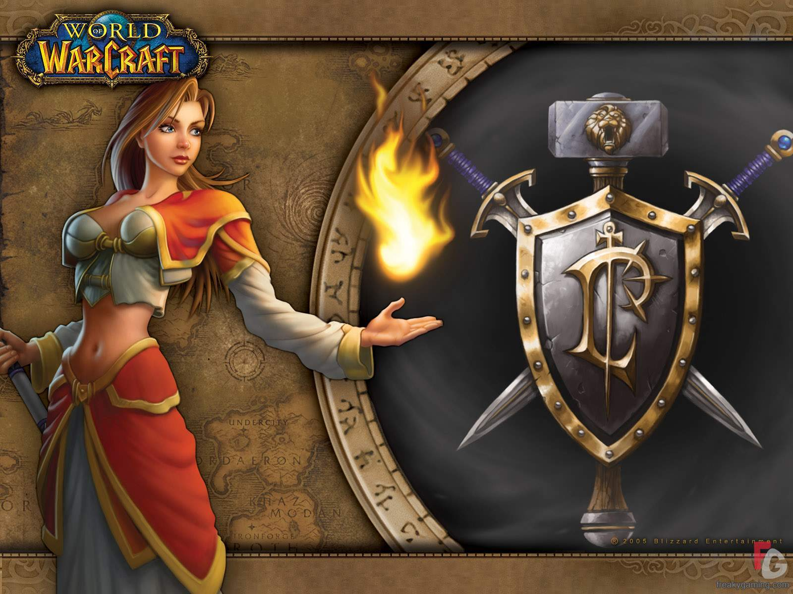
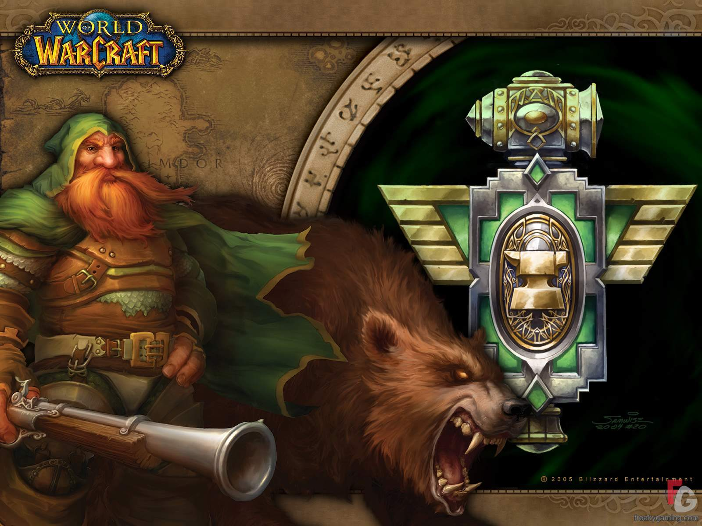
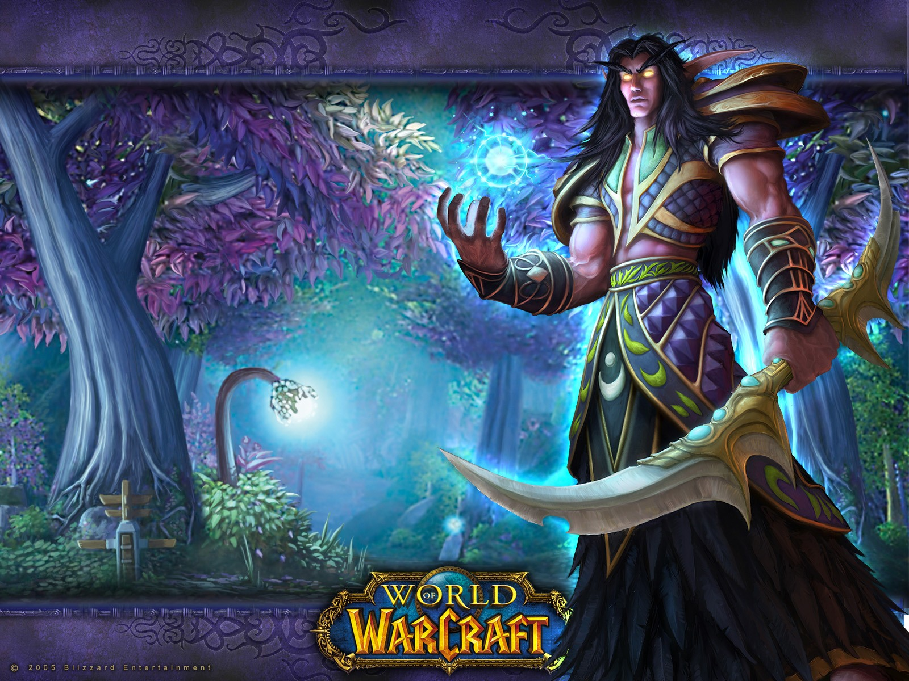
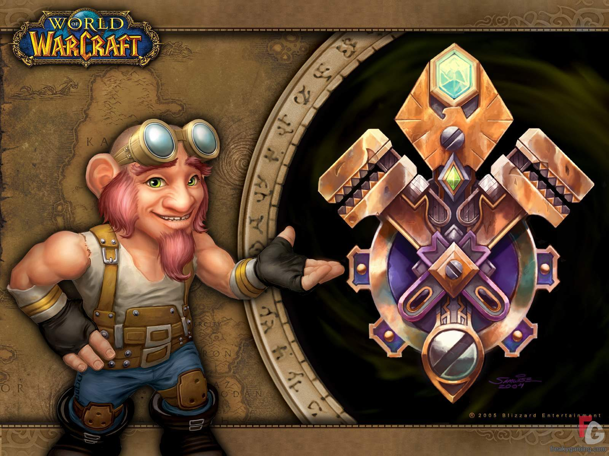
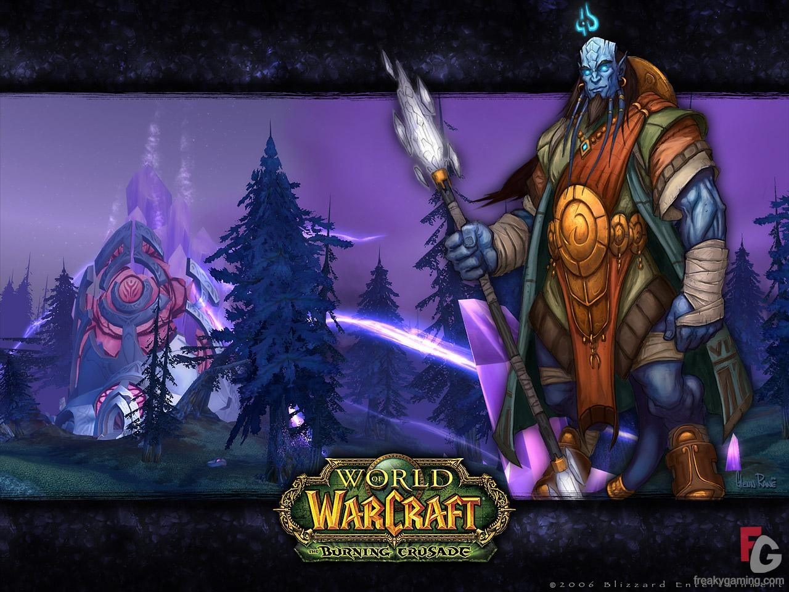
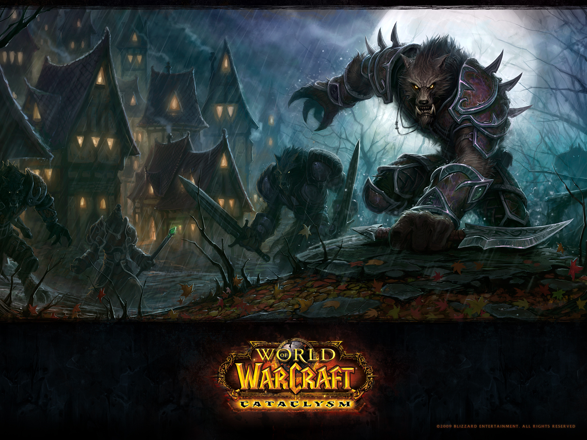

Raças da Alliance:
Human, Stormwind City é a sua capital (Classic wow).

Dwarf, tendo Ironforge como capital (Classic wow).

Night Elf, Darnassus é a sua capital (Classic wow).

Gnome, tendo também Ironforge como capital (Classic wow).

Draenei, e Exodar é a sua capital (Burning Crusade).

Worgen, Gilneas City é a capital (Cataclysm).
